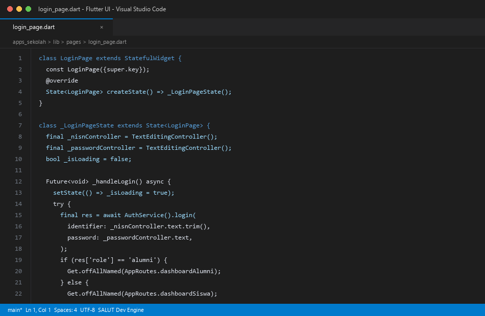
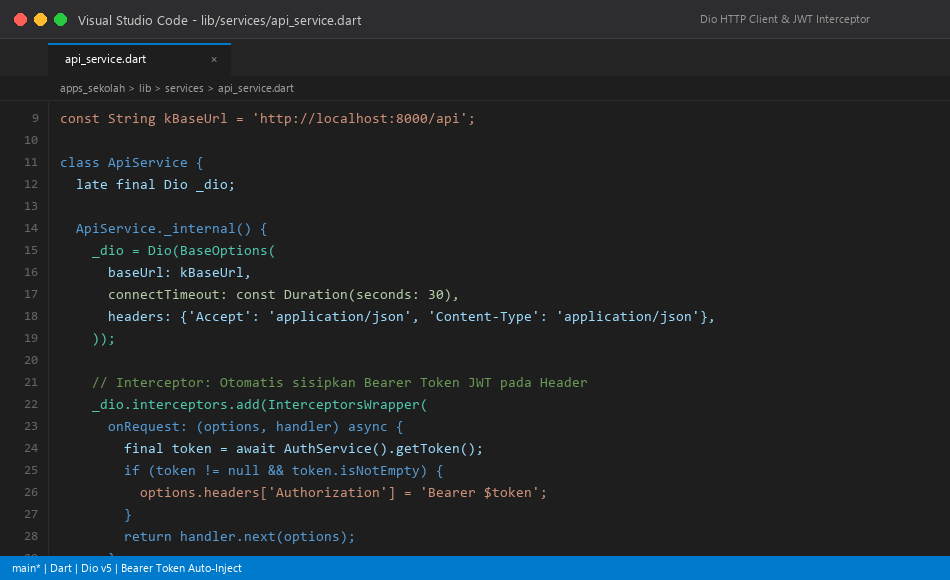
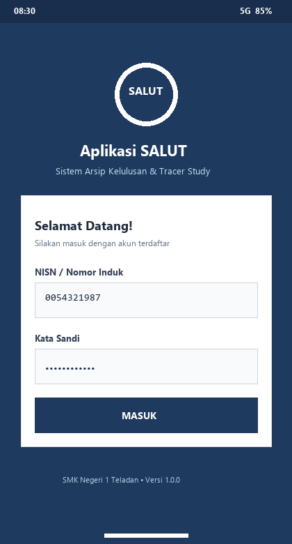
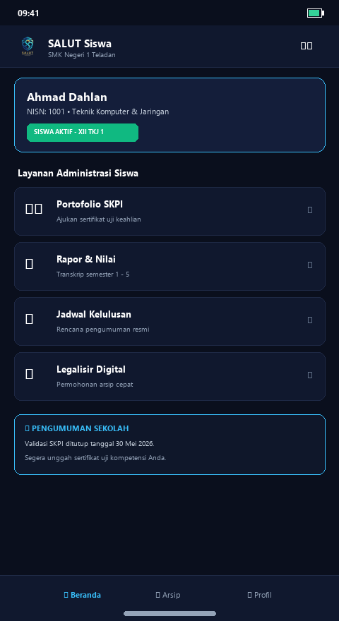
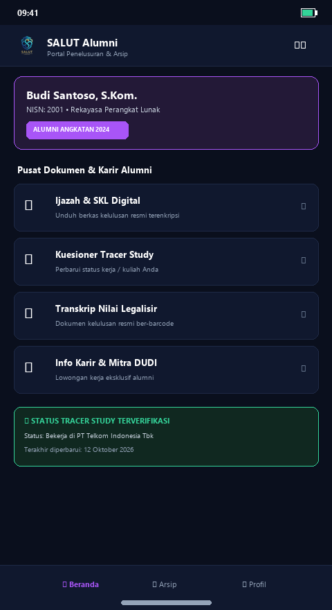
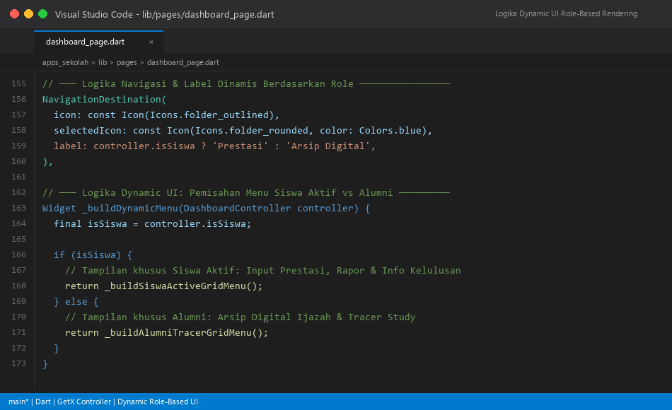
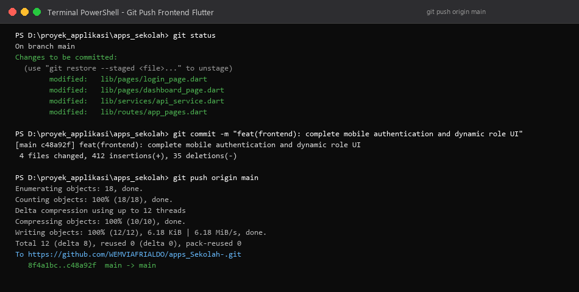
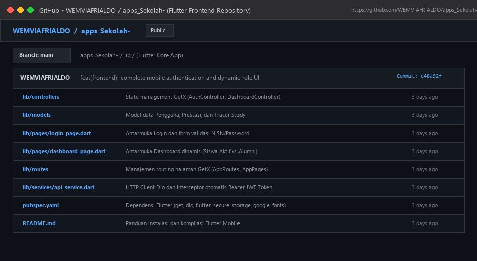

Tahap perkembangan kedua berfokus pada pembangunan antarmuka mobile menggunakan framework Flutter. Desain antarmuka dirancang responsif dengan mengadopsi estetika clean academic modern. Komponen utama meliputi halaman autentikasi (login_page.dart) dengan validasi form nomor induk siswa (NISN) dan kata sandi, serta dasbor utama (dashboard_page.dart) dengan kartu ringkasan informasi akademik dan menu aksi cepat.

Aplikasi Flutter dihubungkan dengan Backend API Laravel melalui kelas ApiService yang memanfaatkan pustaka Dio HTTP Client. Diterapkan mekanisme Interceptor yang secara otomatis membaca token JWT dari media penyimpanan aman perangkat (flutter_secure_storage) dan menyematkannya pada header Authorization di setiap permintaan data ke server. Interceptor juga mendeteksi status 401 Unauthorized guna mengarahkan pengguna kembali ke halaman Login saat sesi berakhir.

Aplikasi mobile dikompilasi dan dijalankan pada emulator Android serta perangkat fisik HP Samsung. Pengujian memvalidasi dua skenario login peran: akun Siswa Aktif (Budi Santoso) dan akun Alumni (Siti Rahayu).



Menggunakan reactive state management GetX, antarmuka aplikasi SALUT dapat bertransformasi secara dinamis menyesuaikan data peran (role) yang diperoleh dari payload token JWT. Jika pengguna berstatus 'Siswa Aktif', menu yang ditampilkan berfokus pada pemantauan nilai rapor dan pengajuan prestasi; sebaliknya jika berstatus 'Alumni', tampilan otomatis berubah menyajikan menu arsip dokumen ijazah sah dan kuesioner tracer study.

Seluruh pembaruan antarmuka mobile Flutter, GetX controller, model data, dan service disinkronisasikan ke repositori GitHub WEMVIAFRIALDO/apps_Sekolah-.

